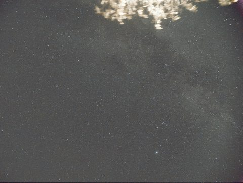

1. opencode辅助星空堆栈
天体摄影后期opencodeSirilPython
项目成果从多张噪声杂乱的raw原图出发，最终合成出银河清晰可见的成品图像。
我做了什么将数据整理为4个文件夹：lights存放初始照片，另外3个分别存放单独拍摄的不同类型噪声校准帧；之后用opencode调用Siril完成校准、叠加与拉伸，再用StarNet去星、scipy降噪与锐化、星点硬化，最后Screen无损合成。
遇到的困难困难1：一开始打算手动操作Siril完成后期处理，但安装的Siril里没有堆栈降噪脚本，网上也很难找到现成的，星空处理最关键的步骤无法实现；
困难2：拍摄时没有使用赤道仪，相机没有跟随星星移动，lights里的几张原图星点位移严重，无法直接多张堆栈，手动处理后的图片依然噪点很多、效果不好；
困难3：部分步骤人工操作不如程序自动判定，比如背景提取要尽量避免选到星星和星云，靠人肉眼识别既低效又不可靠。
如何解决解决1：让opencode和大模型在GitHub等社区参考类似的堆栈脚本模板，自己写了一个脚本，实现了在Siril里堆栈的功能；
解决2：针对没有赤道仪导致的星点位移，又让opencode写脚本自动解决了无法多张堆栈的问题；
解决3：把我的需求、处理照片的全部流程和注意事项都告诉opencode，让它自动编写脚本调用Siril，实现了全自动处理照片——例如背景提取改由程序自动判定：很小的区域过亮就不选，并用Siril里的星云数据匹配出照片中的星云，比人工选择更可靠。
light文件夹中raw格式原图的相机预览
raw原图在电脑上的显示（可见大量杂乱信号）
 初始数据分四个文件夹：lights存初始照片，其余存各类噪声校准帧
初始数据分四个文件夹：lights存初始照片，其余存各类噪声校准帧

阶段性成品图
最终成品图像：银河清晰可见
2. 课件批注
opencode自制skillLLM
项目成果通过opencode对blackboard上的讲义中的专业词汇进行中文标注并附加详细解释（详细解释由LLM主要根据ppt生成），共完成13个课件，批注版课件以网页文件形式呈现，原版课件保持不变。
我做了什么在opencode中沉淀出自制skill（pdf-glossary-annotate），让大模型按照skill中的规范读取课件并生成批注版网页课件；期间多次迭代优化skill和参考词汇表。
遇到的困难困难1：强模型提取PPT中专业词汇的精确度较高，但比较费钱；弱模型便宜，但提取专业名词的精度不足；
困难2：想把网页版课件上的文字复制下来做笔记，却发现无法复制——整个网页文件输出的都是图片；
困难3：实现文字复制后，又遇到一页左右是两个不同文本的情况，直接复制一边的文本会把另一边也一起复制进来。
如何解决解决1：先用强模型提取专业词汇，再由我人工审核，生成并改了好几版参考词汇表给弱模型做参考，有参照之后专业名词的提取明显更精准；
解决2：让opencode把原版PDF中的文字提取出来，隐形地黏在网页文件的图片上，使文字可以复制；
解决3：让opencode参考原版PPT中的文本框，在一页里划分出不同的文本区域，实现了精准复制。
3. 自我介绍静态网页
opencode开发GitHub部署HTML/CSS
我做了什么用opencode开发HTML/CSS/JS静态页面（含中英双语切换与目录滚动高亮），从零配置Git与SSH密钥，将项目推送到GitHub并启用GitHub Pages完成部署。
遇到的困难困难1：初期网页排版混乱，页面不美观；
困难2：在本地做完网站后，部署到公网时没有服务器。
如何解决解决1：让opencode去GitHub上找自我介绍网页相关的skill，我再人工提意见迭代网页排版；
解决2：发现GitHub免费提供服务器（GitHub Pages），我在本地安装Git并配置SSH密钥，把网页文件传到GitHub服务器上完成部署。
4. 班级投票动态网页
opencode开发kimi部署动态网页
我做了什么开发前先绘制了网页流程设计图，明确网页要显示什么、点哪里会跳转到哪里、有哪些功能；之后用opencode完成开发，并通过kimi部署上线。
遇到的困难困难1：一开始设计的网页流程没有账号系统，链接一点进去就是管理投票界面——任何人拿到链接都能随意修改甚至删除投票，无法区分发起者和投票者，也难以防止重复投票；
困难2：网页功能单一，比如引入投票人名单时只能一个一个手动输入，而且格式稍有不对就会导致导入出错；
困难3：动态网页需要数据库，GitHub不向我提供数据库，我需要重新找服务器。
如何解决解决1：参考现有投票程序的流程，重新设计网页流程并修改代码；
解决2：让身边的人体验我的投票网页，收集意见和bug，数次迭代网页功能、修复bug——比如增加了导入Word文档、Excel格式的名单，同时放宽格式要求，乱七八糟的格式导入进来也可以识别；
解决3：把网页部署到kimi上。
网页优势我身边的使用者发现网页不行了可以直接由我来维护；想要什么新功能直接跟我说就行，我可以自己加上。